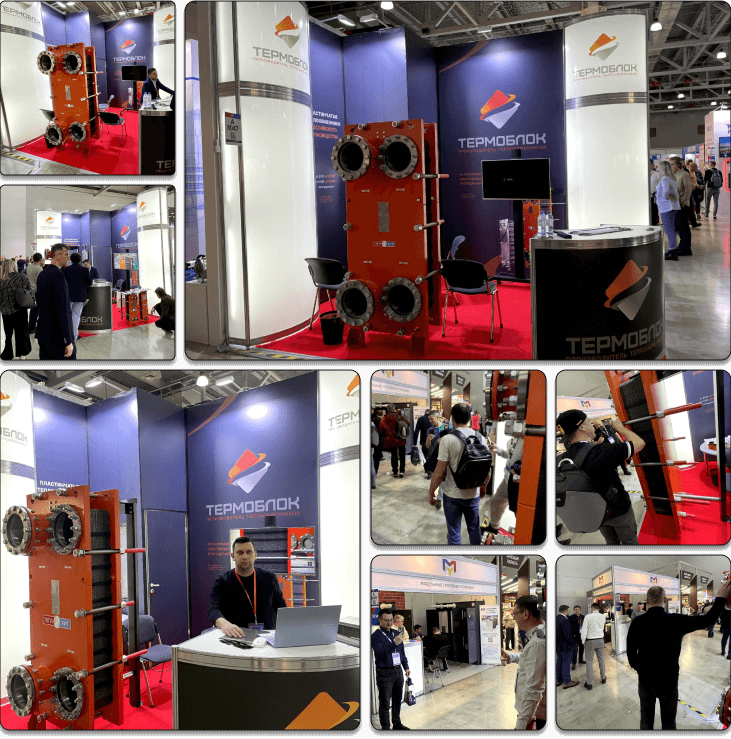

<p>
  Мы принимали участие в выставках "Акватерм" в разных городах России более 5 раз, однако участие в выставке
  “Акватерм-2024” в Москве стало значимым событием для компании. Выставка позволила
  продемонстрировать новый пластинчатый теплообменник полностью российского производства ТИ95 <span
    class="font-semibold text-orange">(ДУ250)</span>. Была представлена обновленная линейка теплообменных пластин,
  которая включает в себя 14 типоразмеров пластин. Выставка представила возможность лично обсудить перспективы
  сотрудничества с потенциальными клиентами и
  партнерами. Посетители отметили высокую эффективность, простоту монтажа и обслуживания представленного оборудования.
</p>


